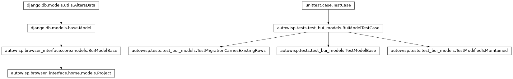
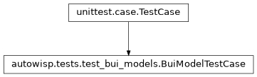
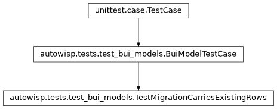
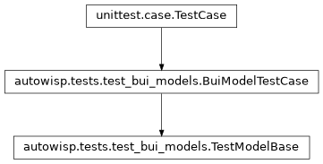
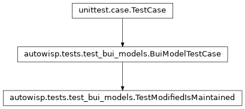

autowisp.tests.test_bui_models module
Class Inheritance Diagram

Tests for the browser-interface model base and its timestamp triggers.
Importing this module configures Django against the throwaway user data
directory that autowisp.tests installs, so the developer’s real
bui_db.sqlite3 – which holds their project list – is never touched.
That redirect happens when the parent package is imported, which is before
this module runs, so nothing here needs to arrange it.
- class autowisp.tests.test_bui_models.BuiModelTestCase(methodName='runTest')[source]
Bases:
TestCase
Base migrating the throwaway browser-interface database.
- class autowisp.tests.test_bui_models.TestMigrationCarriesExistingRows(methodName='runTest')[source]
Bases:
BuiModelTestCase
Upgrading an existing database keeps its data and stamps it.
- test_existing_row_keeps_created_and_gains_modified()[source]
The column is added to a populated table without loss.
Also exercises migrating backwards across the change, which is what first revealed that SQLite refuses to alter a column while a trigger names it – hence dropping them in
pre_migrate.
- class autowisp.tests.test_bui_models.TestModelBase(methodName='runTest')[source]
Bases:
BuiModelTestCase
Every browser-interface model carries the timestamp columns.
- test_contrib_models_are_left_alone()[source]
Django’s own tables get no trigger; they have no such column.
- test_selection_matches_the_base_class()[source]
Exactly the models deriving from the base are selected.
Comparing the two sets, rather than checking one known model, is what makes this hold for models added later: the triggers are installed on the strength of a
modifiedfield being present, and this asserts that predicate agrees with deriving fromcore.models.BuiModelBase. A model that gained the column some other way, or one that derived from the base but shadowed the field, would show up here.
- class autowisp.tests.test_bui_models.TestModifiedIsMaintained(methodName='runTest')[source]
Bases:
BuiModelTestCase
modifiedadvances however the row is written.- test_bulk_update()[source]
bulk_updatewould otherwise write back a stale value.Django reads the in-memory attribute rather than calling
pre_save, so without the trigger this does not merely skip the stamp – it restores the timestamp the object was loaded with.
- autowisp.tests.test_bui_models._tick = 0.05
Enough for the millisecond-resolution timestamps the trigger writes to differ between two updates.